2026 원격훈련 종사자 실무 교육
협회 안내 사항
인사 말씀
- 과정 심사·인증평가 기준과 AI 기초·융합 과정 심사는 올해와 큰 변화가 없을 전망입니다.
- 내년 예산은 올해(약 1,100억 원)와 비슷하나 일반직무는 약 15% 줄고 다른 사업으로 옮겨질 예정입니다.
- 11월 26일 한국산업인력공단 사업 설명회, 12월 21일 심사평가원 설명회가 예정되어 있습니다.
AI 기초 과정 차시 기준
- AI 기초 과정은 40차시가 아니라 20차시(20시간) 내외로 운영해 달라고 당부했습니다.
- 차시가 과도하면 예산이 부족해져 원격기관 전체가 부정적으로 비칠 수 있습니다.
바이브코딩으로 하는 업무 자동화
강연자는 본인이 쓰는 Claude로 예시를 들었지만, 각자 사용하는 ChatGPT 등 다른 AI로도 같은 방식으로 활용하면 된다고 말했습니다.
강의 핵심 개념
-
01
바이브코딩이란
코드를 모르는 사람이 AI에게 원하는 기능을 말로 설명해 프로그램을 만드는 방식입니다. AI는 코드는 잘 만들지만 교육원 업무는 모르기 때문에, 만들고 싶은 것을 명확히 전달하는 능력이 핵심입니다.
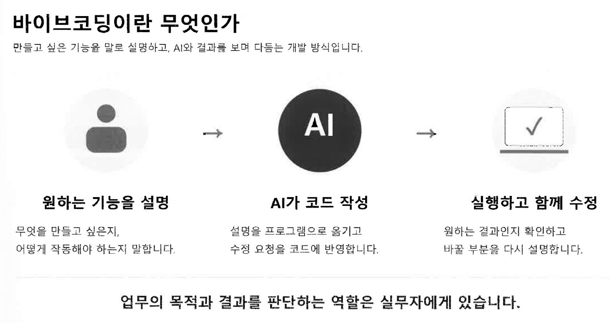
-
02
AX와 DX
AX는 업무 방식, 사람이 하던 일, 교육원 규정 같은 운영 체계를 AI가 수행할 수 있는 형태로 바꾸는 것입니다. 데이터가 개인 PC에 흩어져 있다면 업무를 목록으로 만들고 데이터화부터 해야 합니다.
핵심데이터화할 수 있는 만큼이 AX가 됩니다.
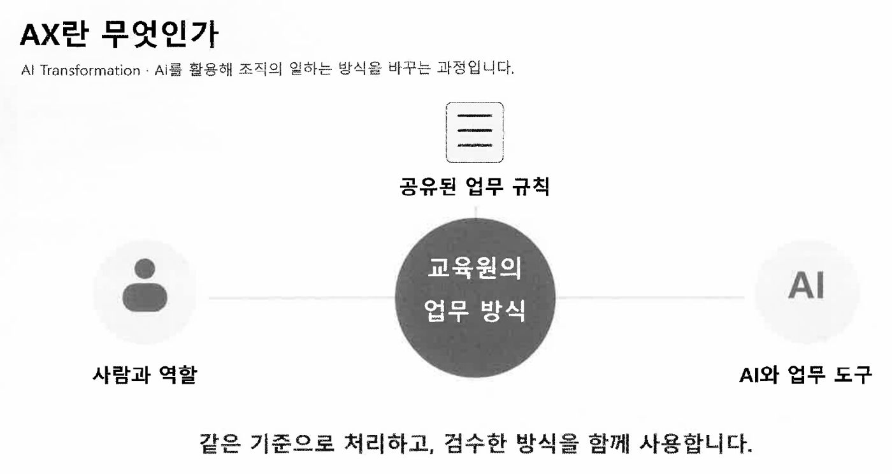
-
03
교육원에 AX가 필요한 이유
교육원은 신고, 명단 취합, 일괄 발송처럼 반복 업무가 많습니다. 다만 모든 일을 AI가 직접 처리하면 토큰 비용이 커지므로, AI로 자동화 프로그램을 만들고 필요한 곳에만 AI를 붙이는 방식이 맞습니다.
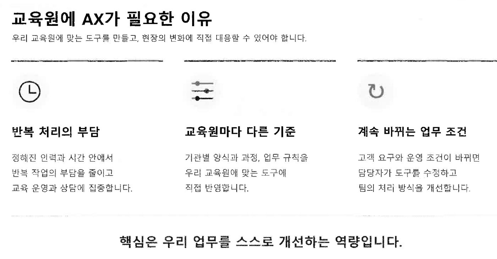
-
04
오늘의 실습 주제
첫째는 영업자·사업주마다 제각각인 명단을 LMS 업로드 양식으로 바꾸는 수강생 명단 변환기, 둘째는 고용24 가입 없이 공공데이터로 기업의 예상 환급 규모를 추정하는 신규 사업주 발굴기입니다.
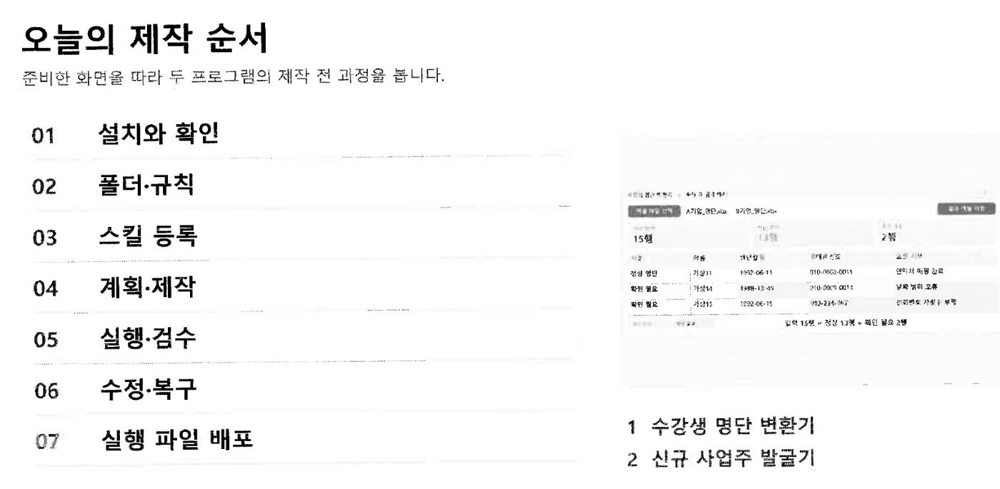
교육원 업무에 적용하는 다섯 단계
-
01
도구 설치와 확인
Claude Code를 예로 들었지만 Codex나 Gemini 같은 다른 도구를 써도 됩니다. 코드가 낯설다면 터미널보다 데스크톱 앱을 권장합니다. 필요한 프로그램은 Python, Node.js, Git입니다.
참고명령어는 외우지 않아도 됩니다. “파이썬 설치해줘”라고 요청하면 알아서 설치합니다.
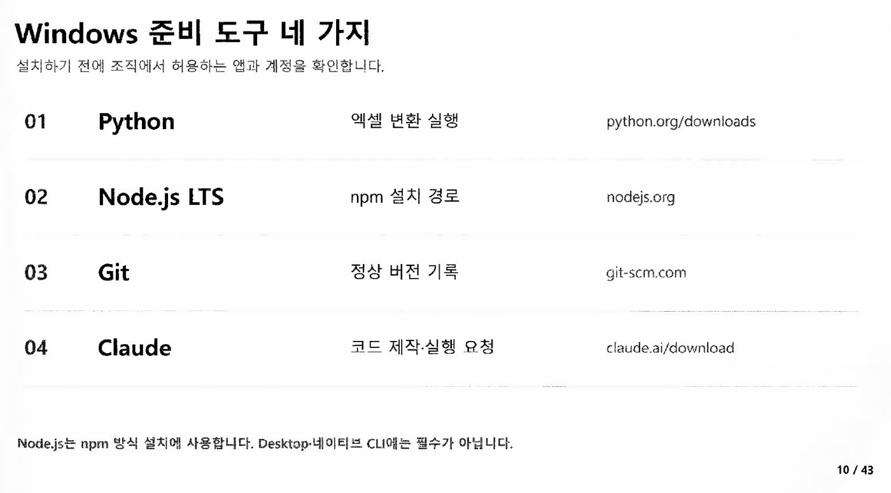
-
02
작업 폴더와 업무 규칙
프로그램이 읽을 엑셀은 정해진 폴더에 넣고, 그 폴더만 열어 작업합니다. 폴더 안의 CLAUDE.md에는 읽기 전용 파일, 저장 방식, 열 순서 같은 업무 규칙을 적습니다.
주의프로그램마다 폴더를 따로 만드세요. 상위 폴더의 규칙과 충돌할 수 있습니다.
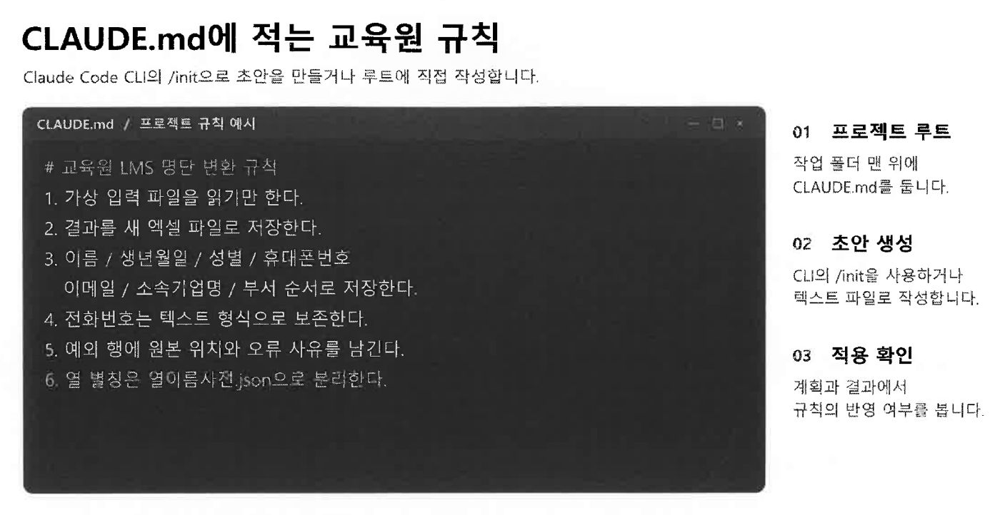
-
03
스킬 등록과 활용
스킬은 잘 정리된 작업 지침 묶음으로, Claude가 작업 전에 참고합니다. 공식 스킬은 모두 설치하고, 외부 스킬은 무료 배포가 허용된 것만 씁니다. 필요한 스킬은 “이런 작업에 맞는 스킬을 찾아 설치해줘”라고 물어보면 됩니다.
주의권한을 모두 열어 두면 스킬이 외부에 공개되거나 결제가 진행될 수 있습니다.
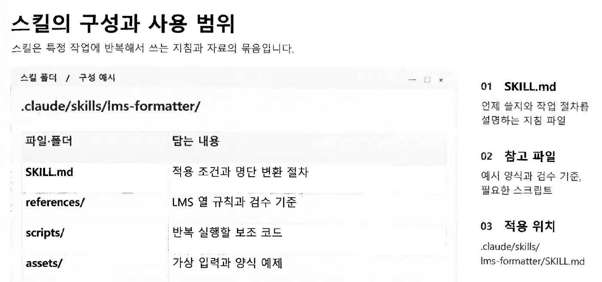
-
04
Plan Mode로 계획 후 제작
바로 만들어 달라고 하기 전에 Claude와 충분히 상담하는 단계입니다. 입력 파일과 열, 출력 형식과 저장 위치, 예외 처리를 함께 정리하고, Claude가 “만들어도 되겠다”고 할 때 제작을 맡깁니다.
핵심강의에서 가장 강조한 단계입니다. 토큰 비용과 재작업이 함께 줄어듭니다.
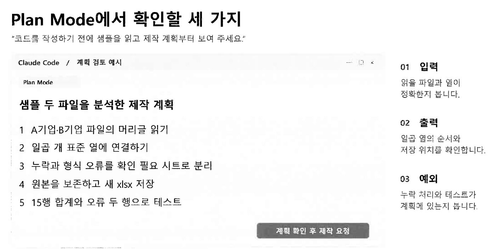
-
05
검수와 배포
결과를 보여 주는 HTML 보고 페이지를 요청하면 잘못된 행만 골라 고칠 수 있습니다. Git에 버전이 남아 있어 언제든 되돌릴 수 있고, “빌드해줘”로 실행 파일을 만들어 배포합니다.
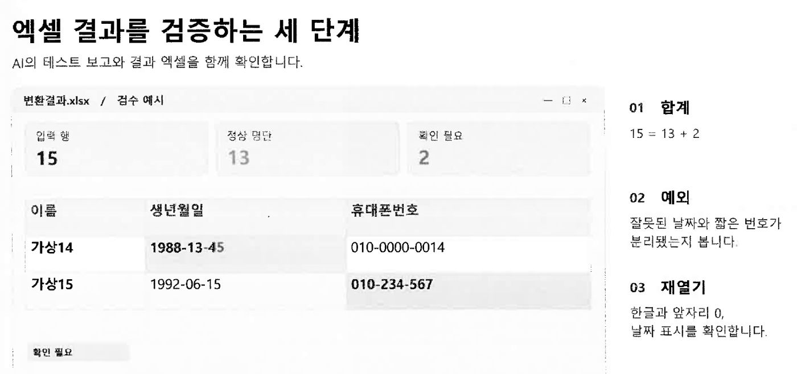
실습 1. 수강생 명단 자동 변환기
-
01
준비 파일과 표준 열
머리글이 서로 다른 가상 엑셀 두 개(A기업 10행, B기업 5행)를 LMS 표준 7개 열로 통일합니다. 성명과 이름, 핸드폰과 연락처처럼 이름만 다른 열을 같은 열로 연결하는 것이 핵심입니다.
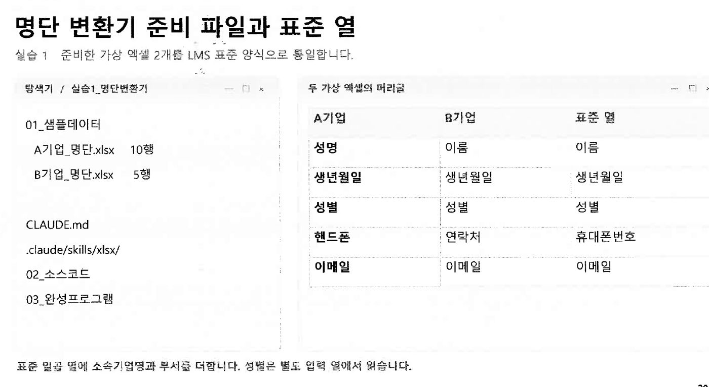
-
02
계획 먼저 확인
Plan Mode에서 “코드를 작성하기 전에 샘플을 읽고 제작 계획부터 보여 주세요”라고 요청합니다. 머리글 읽기, 7개 열 연결, 오류 분리, 새 파일 저장, 15행 테스트 순서로 계획이 나옵니다.
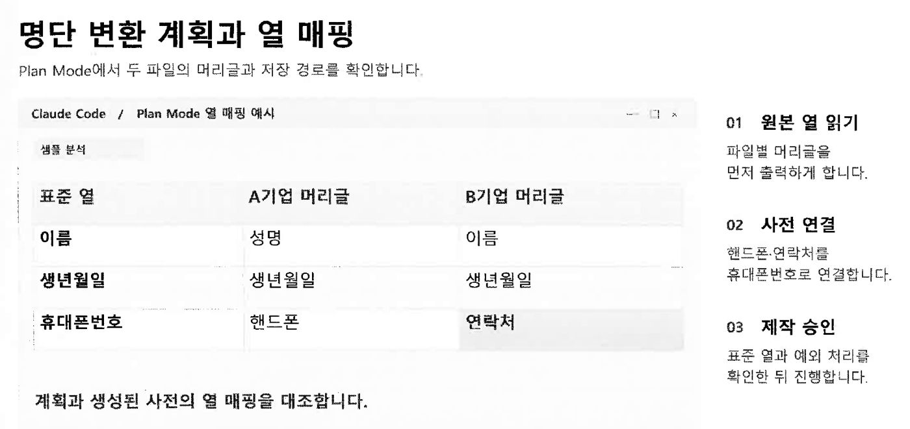
-
03
제작 요청
CLAUDE.md와 xlsx 스킬을 적용해 표준 7개 열로 바꾸고, 정상 명단과 확인 필요 시트를 나누며, 열 사전은 JSON 파일로 분리하라고 요청합니다.
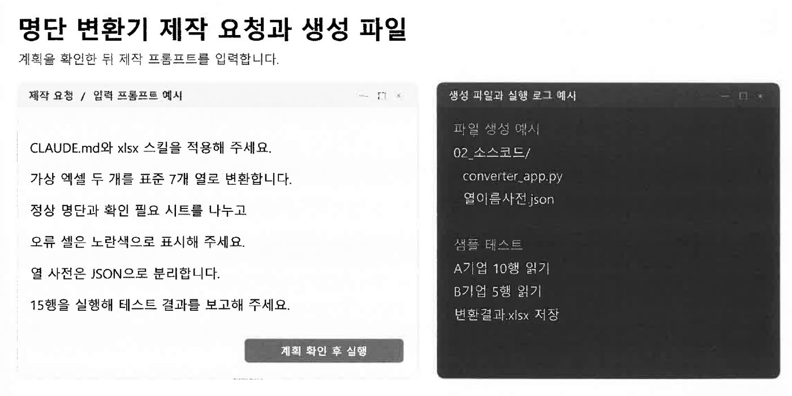
-
04
1차 실행 결과 확인
B기업 5행의 휴대폰번호가 빈칸으로 나옵니다. 열 사전에 ‘연락처’라는 별칭이 없어서 생긴 매핑 누락입니다.
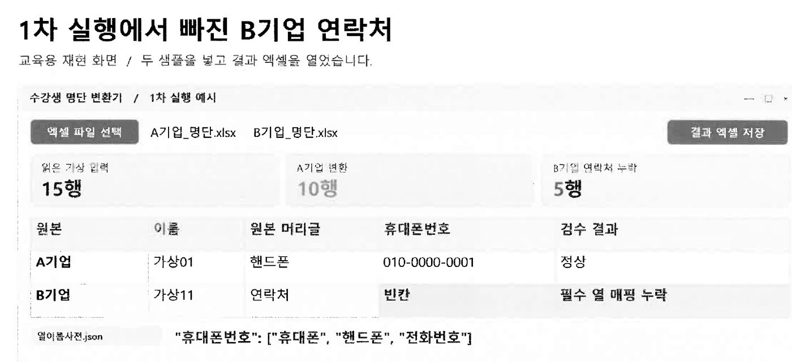
-
05
열 이름 사전 수정
‘연락처’, ‘모바일’, ‘HP’, ‘휴대전화’를 휴대폰번호의 별칭으로 추가하고, 필수 열을 찾지 못하면 원본 머리글을 화면에 보여 달라고 요청합니다.
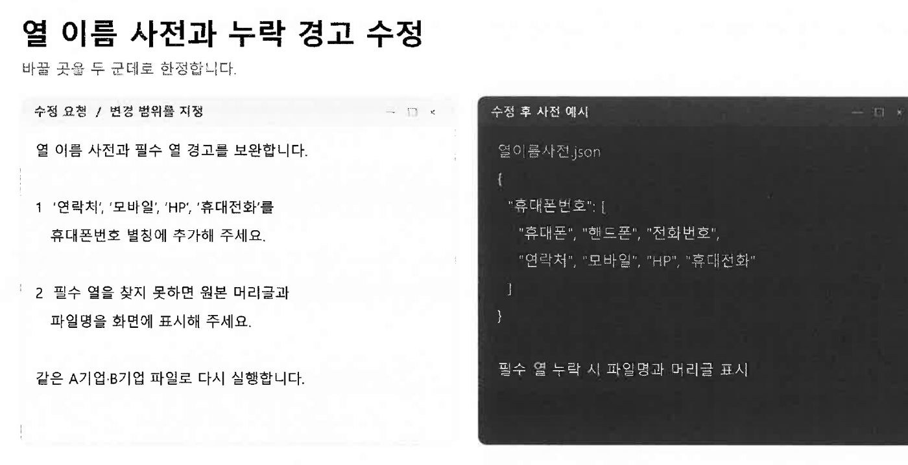
-
06
재검수
같은 파일로 다시 실행하면 15행이 정상 13행과 확인 필요 2행으로 나뉩니다. 확인 필요 2행은 날짜(1988-13-45)와 전화번호(010-234-567)의 형식 오류입니다.
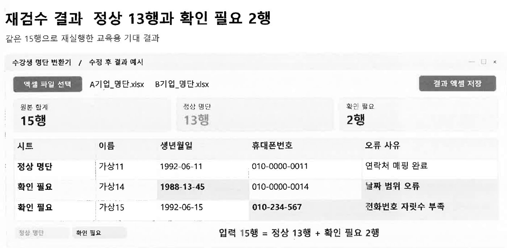
-
07
빌드와 배포
“빌드해줘”로 명단변환기.exe를 만들고, 열이름사전.json과 함께 동료 PC에서 실행·변환·저장이 되는지 확인합니다.
참고교육원 양식이 바뀌면 규칙을 고친 뒤 다시 검수하고 빌드합니다.
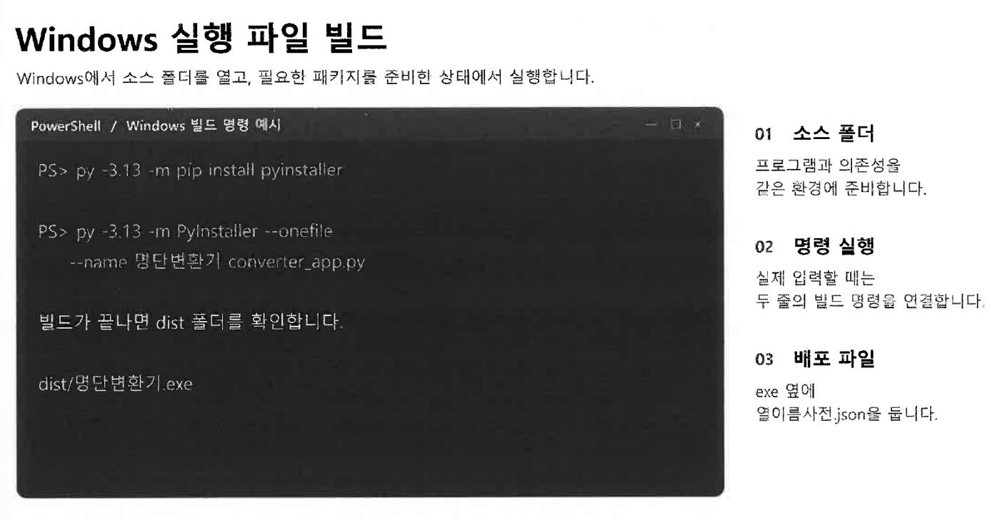
실습 2. 공공데이터 신규 사업주 발굴기
-
01
입력 자료
공공데이터포털의 ‘국민연금 가입 사업장 내역’을 씁니다. CSV와 API 모두 제공되며 기준월, 사업장명, 지역, 가입자 수, 당월 고지금액, 신규 취득자 수가 들어 있습니다.
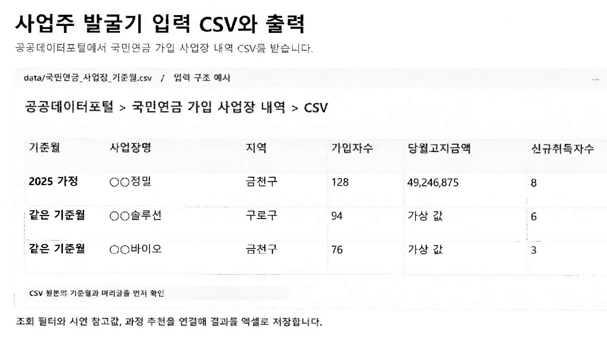
-
02
지원 한도 참고값 계산
계산식은 몰라도 됩니다. Plan Mode에서 만들고 싶은 것을 설명하면 우선지원대상기업 240%, 최저 500만 원, 2026년 국민연금 요율 9.5% 같은 조건을 AI가 찾아 정리합니다.
-
03
계산 가정과 실제 한도
고지금액과 가입자 수만으로 실제 훈련 지원 한도를 확정할 수는 없습니다. 상담 전에 고용보험 상시근로자 수, 적용 요율, 지원 대상 여부를 고용24에서 기업별로 확인합니다.
주의추정 환급액은 참고값입니다.
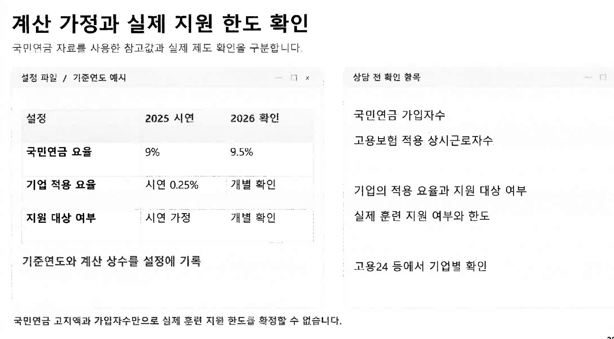
-
04
수동 검산
○○정밀(가상, 가입자 128명, 당월 고지액 49,246,875원)로 직접 계산하면 월 보수 추정 547,187,500원, 연간 보험료 추정 16,415,625원, 참고값 39,397,500원이 나옵니다.
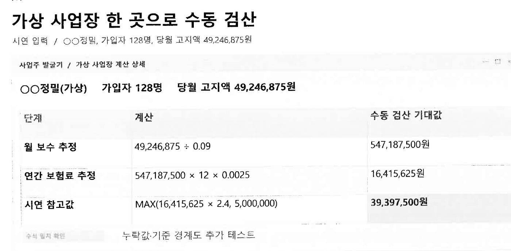
-
05
영업팀용 확장
지역, 참고값 1,000만 원 이상, 신규 취득 5명 이상 같은 필터와 업종별 과정 추천을 붙여 엑셀로 저장합니다. 후보 정리부터 콜드메일 작성까지 자동화할 수 있습니다.
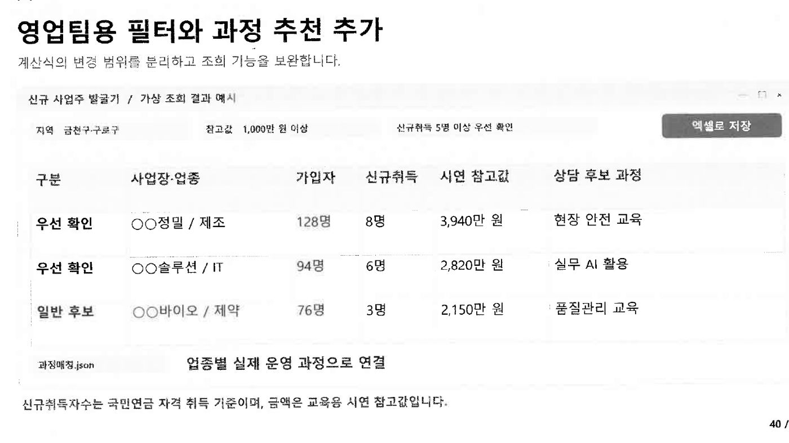
-
06
매월 자료 교체
매월 새 CSV로 바꿔 넣어도 되지만, 가능하면 API 키를 연동하는 것이 가장 편한 자동화입니다.
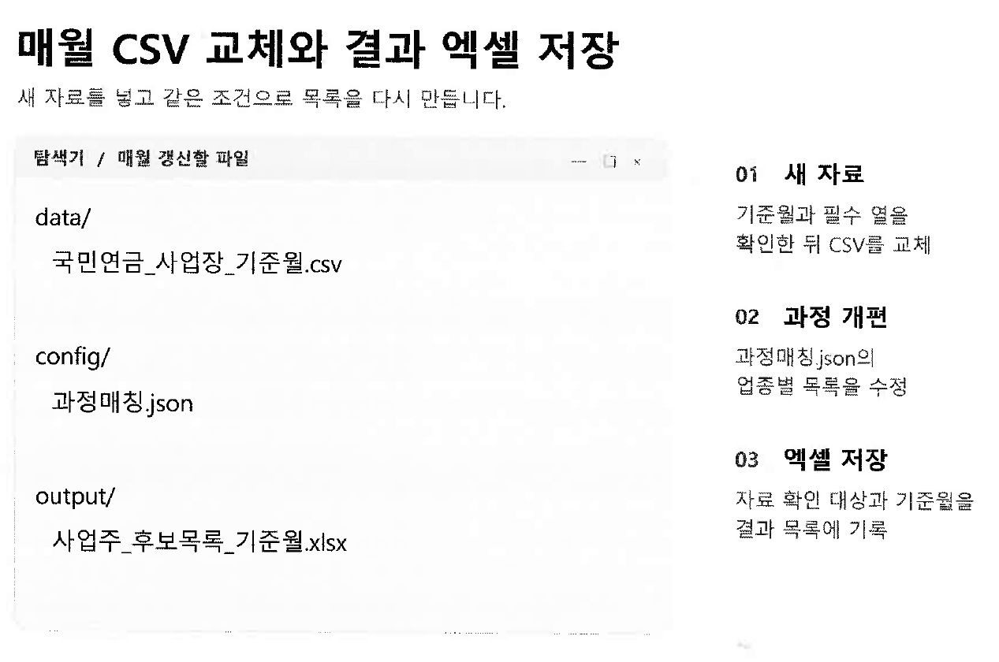
1부 핵심 정리
- 01
Claude Code 앱만 설치하고, Python·Git·Node.js는 Claude에게 설치해 달라고 합니다.
- 02
업무 매뉴얼을 Claude에게 주고 규칙(CLAUDE.md)을 만들어 달라고 합니다.
- 03
공식 스킬과 ‘스킬 찾는 스킬’을 설치한 뒤, 필요한 스킬은 찾아 달라고 합니다.
- 04
제작 전에 Plan Mode로 충분히 대화해 시간과 토큰을 아낍니다.
- 05
배포도 “문제점 찾아본 뒤 배포해줘”라고 요청합니다.
AI로 만드는 교육영상
AI 교육영상 제작의 흐름
-
01
목적에 맞는 영상 유형
교육 목표를 먼저 정하고 표현 방식을 고릅니다. 상황 판단에는 재연과 드라마, 따라 하기에는 단계별 시범, 개념 이해에는 설명 그래픽, 기억에 남기기에는 캐릭터와 짧은 이야기가 어울립니다.
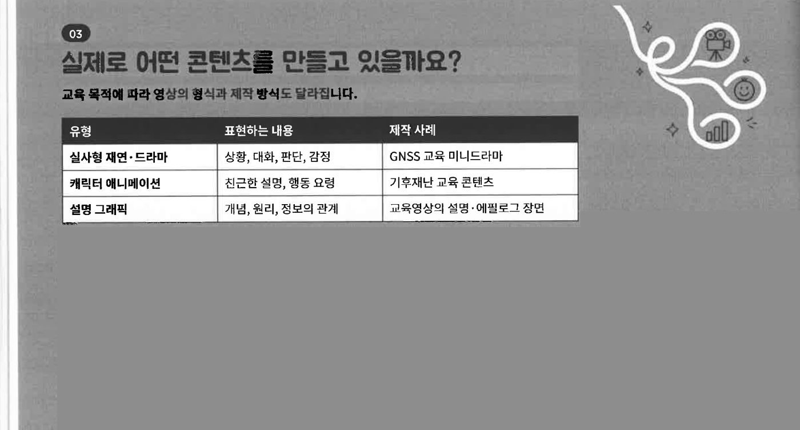
-
02
제작 7단계
교육 목표, 아이디어·대본, 콘티, 기준 이미지, 영상 생성, 사운드·편집, 검수·수정 순서로 진행합니다. 영상 생성은 이 중 한 단계일 뿐이며, 처음에 누구에게 무엇을 보여 줄지 잘 정해야 재생성이 줄어듭니다.
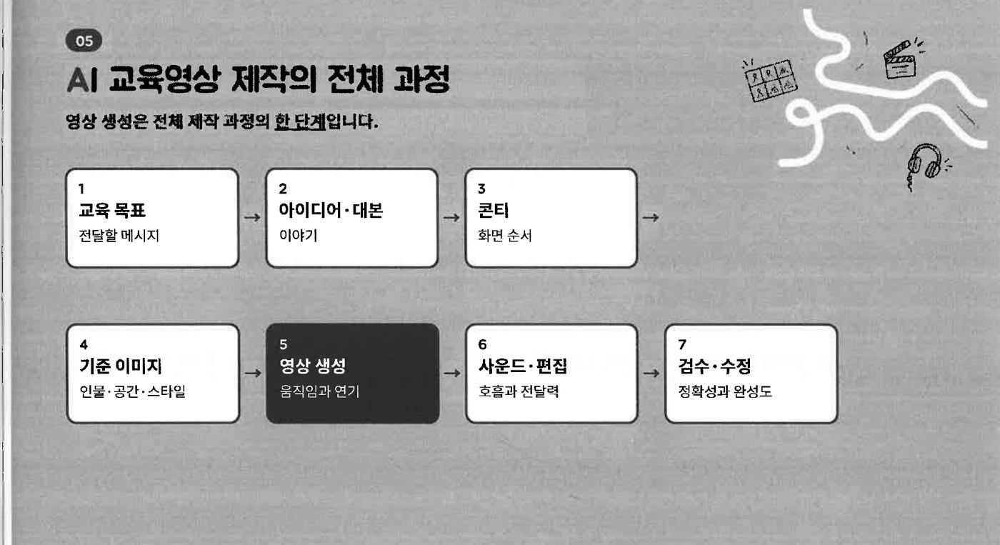
-
03
교육 문장을 장면으로
“업무 처리 전 관련 정보를 확인해야 합니다” 같은 문장을 상황, 인물, 핵심 행동으로 나눠 보이는 장면으로 바꿉니다. 시청자가 무엇을 보고 메시지를 이해할지 먼저 생각합니다.
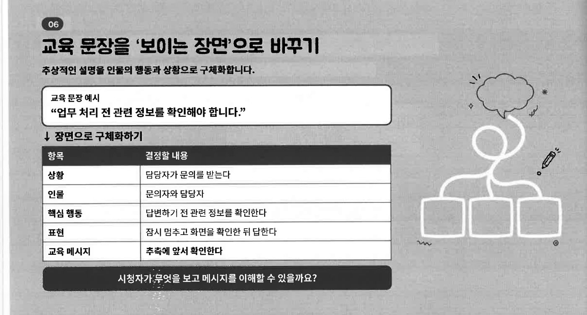
-
04
생성 전에 기준 만들기
인물·공간·소품의 기준 이미지가 있어야 여러 컷을 자연스럽게 이을 수 있습니다. 캐릭터 일관성이 가장 어려우므로 인물 시트와 키 비례표까지 준비합니다.
참고시간은 이미지 제작 80%, 영상 생성 20%로 나눕니다.
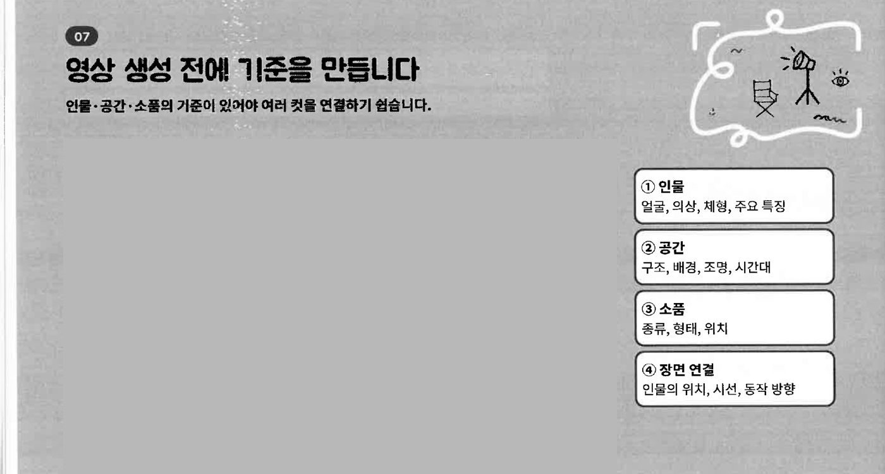
-
05
장면별 모델 선택
모든 장면을 같은 모델로 만들 필요는 없습니다. 시댄스는 대사와 표정 표현이 좋지만 비싸고, 클링은 빠르고 저렴하며, 미니맥스 H3는 음성 없는 모션그래픽에 강합니다.
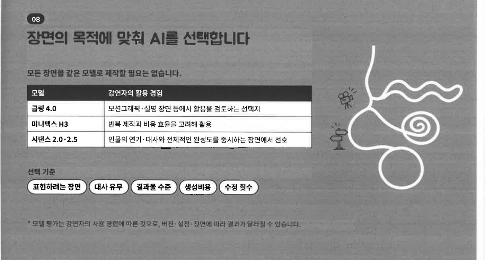
-
06
실제 제작비
제작비는 몇 번 만에 쓸 수 있는 결과가 나오는지에 달려 있습니다. 시댄스 2.5 기준 15초 1회 약 16,800원이고, 보통 세 번 정도 뽑으므로 한 컷에 5만 원 안팎으로 봅니다.
주의발주 기관의 수정이 잦으므로 영상 생성 예산은 예상의 2~3배로 잡는 것이 안전합니다.
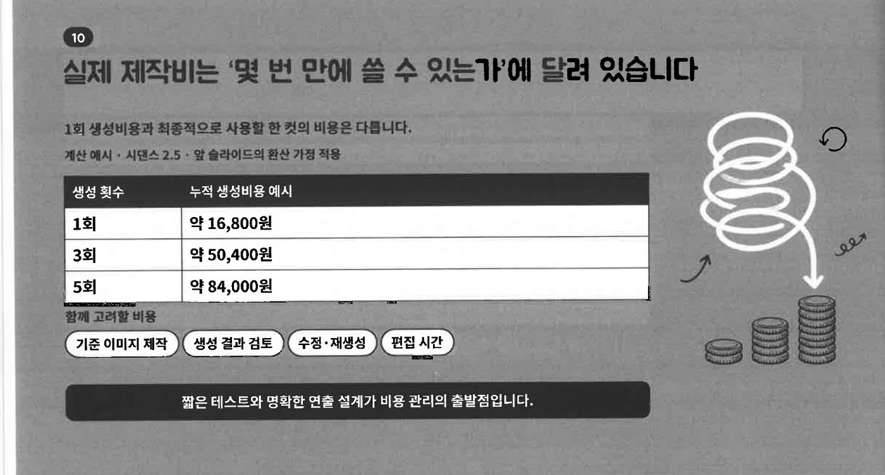
-
07
대사는 필요한 장면에만
대사가 들어가면 목소리, 발음, 립싱크까지 관리할 것이 늘어납니다. 인물이 꼭 말해야 하는 장면인지 먼저 판단하고, 나머지는 화면과 자막, 나레이션으로 전달합니다.
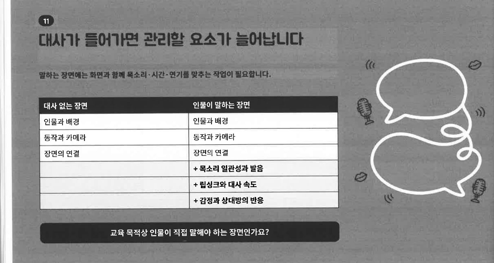
-
08
사운드는 나눠서 제작
대사, 효과음, 나레이션, BGM을 트랙별로 나눠 만들면 수정 범위가 줄어듭니다. 영상 생성 프롬프트에는 ‘BGM은 빼라’고 따로 적습니다.
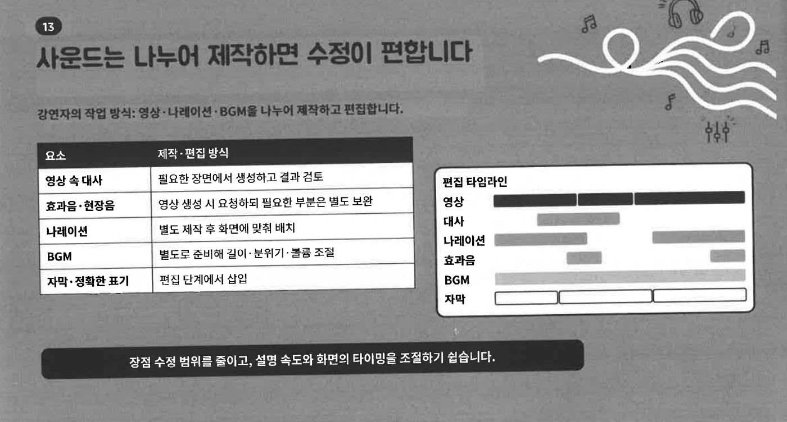
-
09
구체적으로 요청하기
‘자연스럽게’ 대신 “상대의 말을 듣고 잠시 생각한 뒤 조심스럽게 질문한다”처럼 행동으로 요청합니다. 무엇을 보여 주고, 무엇을 유지하고, 무엇을 바꿀지 먼저 정리합니다.
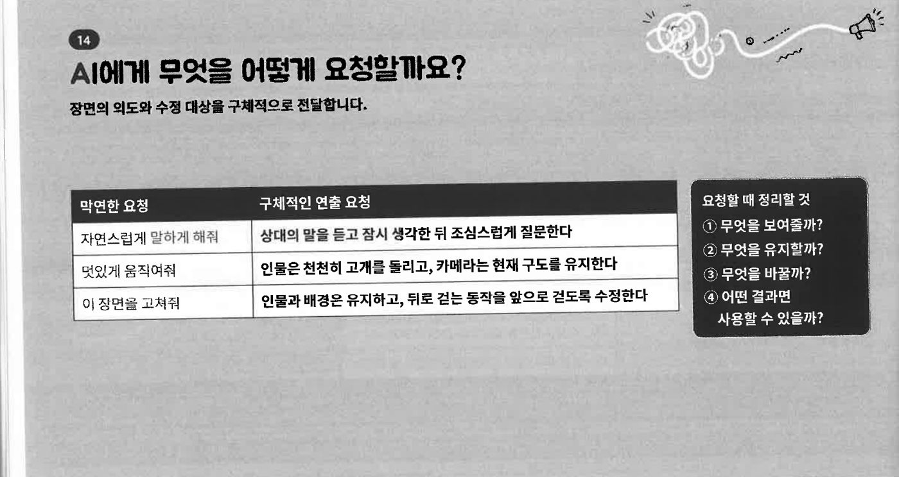
-
10
감독은 결국 자신
AI가 결과를 제안하면 기획, 연출, 판단, 검수는 제작자가 맡습니다. 도구가 많아진 만큼 아이디어와 연출, 예산을 나누는 판단이 더 중요해졌습니다.
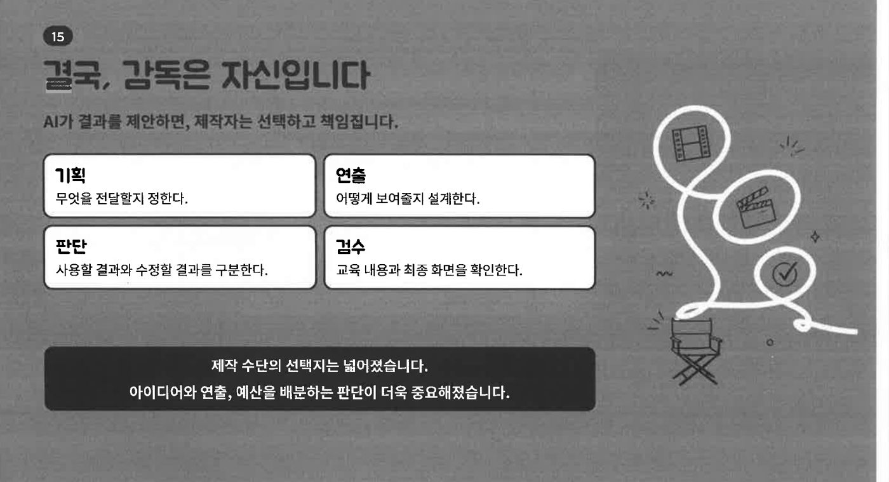
현장 실습 시연
-
01
주제 정하기
참석자와 함께 네 가지 질문으로 주제를 정했습니다. 대상은 20대 구직자, 목표는 실업급여 신청 조건 확인, 상황은 퇴사 후 구직급여를 알게 되는 순간, 핵심 행동은 고용24에서 조건을 확인하는 것입니다.
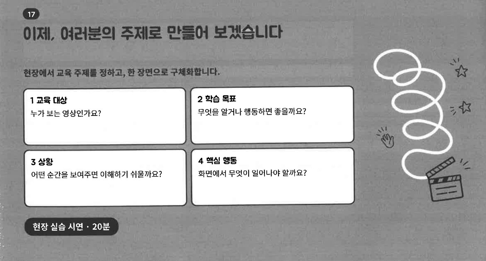
-
02
생성 요청으로 구체화
ChatGPT로 주인공 캐릭터 시트를 만들고, 15초 4컷 콘티를 짠 뒤, 캐릭터 시트를 참조하는 영상 생성 프롬프트를 작성했습니다.
참고BGM은 빼고 효과음만 쓰며, 대사 대신 속마음과 나레이션으로 처리해 립싱크 문제를 피했습니다.
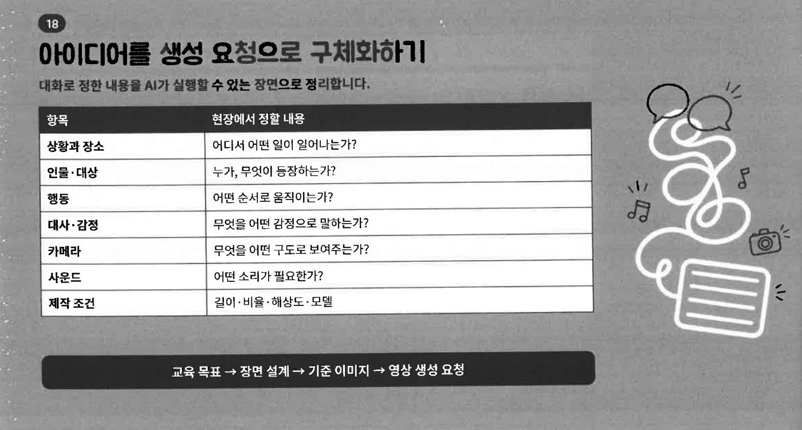
-
03
힉스필드에서 생성
힉스필드에 캐릭터 시트를 인물 요소로 등록하고, 시댄스 2.5, 16:9, 1080p, 15초로 설정해 생성했습니다. 1회 생성에 240크레딧이 들었습니다.
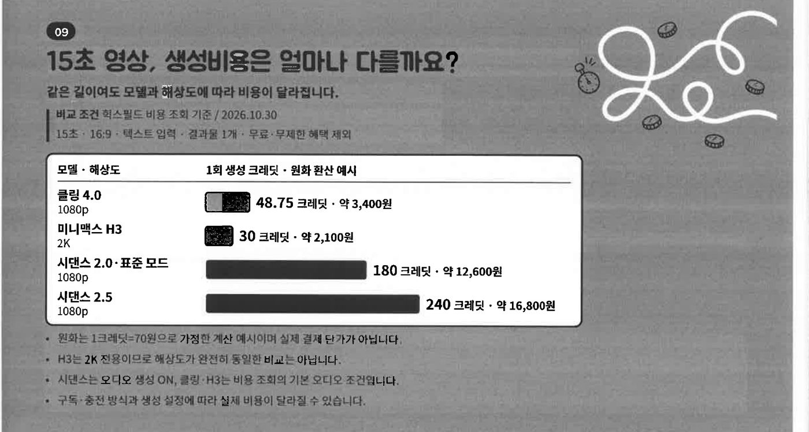
-
04
결과 확인
‘구직급여’가 ‘구직급이’로 발음되는 오류가 나왔습니다. 이런 경우 다시 생성해도 같은 경우가 많아 나레이션으로 처리하는 것이 빠릅니다.
참고카메라 움직임을 줄이고 표정 클로즈업은 2K 이상으로 요청하면 오류가 줄어듭니다.
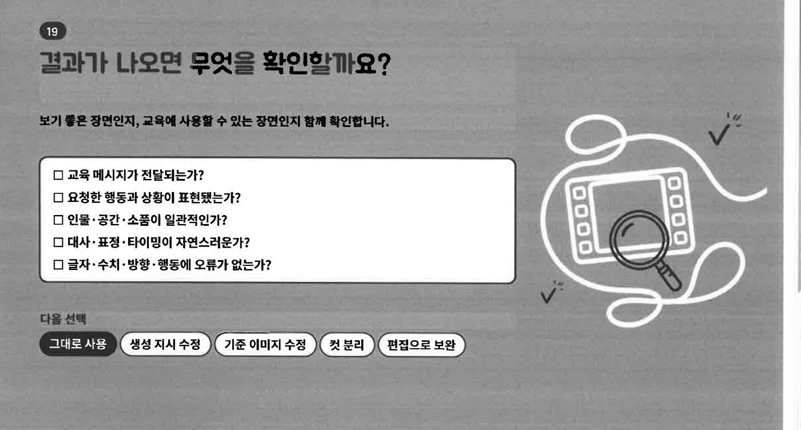
질의응답
캐릭터 목소리가 컷마다 달라지는데 어떻게 하나요?
목소리 등록 기능이 있지만 한국어는 아직 어색합니다. 처음부터 대사 분량을 적게 기획하는 것이 가장 유리합니다.
대표님이 ‘쉽고 돈 안 든다’고 생각하면 어떻게 설득하나요?
1분짜리라도 이어지는 영상을 함께 만들어 보면 캐릭터가 바뀌는 문제를 바로 느낍니다. 말보다 옆에서 같이 만들어 보는 것이 효과적입니다.
역사물처럼 고증이 필요할 때는 어떻게 하나요?
기준 시트를 세심하게 만들고, 컷을 나누거나 문제가 되는 부분을 화면 구도에서 빼는 방식으로 대응합니다.
영상 전에 이미지 단계에서 연출을 세세하게 잡나요?
그렇습니다. 이미지에서 부족한 점은 영상에서 더 커지므로 이미지에 80%의 시간을 씁니다.
2부 핵심 정리
- 01
교육 목표를 먼저 정하고, 목표에 맞는 표현 방식을 고릅니다.
- 02
교육 문장을 인물의 행동과 상황, 즉 보이는 장면으로 바꿉니다.
- 03
인물·공간·소품의 기준 이미지를 먼저 만들어 컷 사이의 일관성을 지킵니다.
- 04
장면별로 모델을 달리 쓰고, 짧은 테스트로 재생성 횟수와 비용을 줄입니다.
- 05
대사는 꼭 필요한 장면에만 쓰고, 사운드는 트랙별로 나눠 만듭니다.